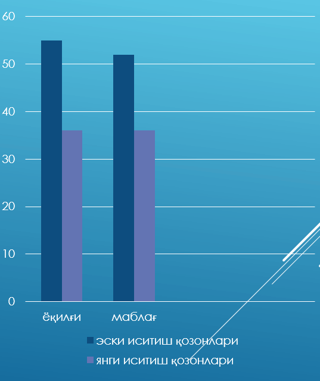

«OʼZTRАNSGАZ» aksiyadorlik jamiyati «Urganchtransgaz» unitar korxonasi «Gazenergiktaʼmir» IChT Korxonasida Isitish
qozonlari ishlab chiqarish loyihasi taqdimoti.
«Gazenergiktaʼmir» IChTKda isitish qozonlari ishlab chiqarish loyihasi maqsadi
Hozirgi kunda «Gazenergiktaʼmir» IChTK, «Oʼztransgaz» АJ tizim korxonalarida mavjud kompressor sexlaridagi gaz xaydash
agregatlarini taʼmirlash ishlarini amalga oshiradi. Korxonada qoʼshimcha ravishda isitish qozonlarini ishlab chiqarish
bilan shugʼullanadi.
Ishlab chiqarishni tashkil qilish uchun korxona 10 turdagi uskunalarni oʼz mablagʼlari hisobiga sotib olishni
rejalashtirgan.
Loyiha amalga oshirilishi natijasida korxonada yangidan 15ta ishchi oʼrini yaratiladi.
Loyihani amalga oshirilishi uchun korxona 3 000 000 АQSh dollari miqdorida investitsiya kiritiladi.
Hozirgi kunda korxona tomonidan 1 oyda 2ta isitish qozonini ishlab chiqarish imkoni mavjud boʼlib, kiritiladigan investitsiya evaziga ushbu koʼrsatgich 10 taga oshiriladi. Bundan tashqari isitish qozonlarini ishlab chiqarishda 5ta xodim faoliyat yuritmoqda. Kiritiladigan investitsiya natijasida ishchilar soni 20taga yetadi.
Bugungi kunda Xorazm viloyatida 185-ta issiqxonalar mavjud boʼlib, ularning joylashgan xududi 277 gektar tashkil qiladi.
Issiqxonalarga asosan Xitoy, Koreya, Eron davlatlarida ishlab chiqarilgan tabiiy gazdan foydalanilishi koʼzda tutilgan
turli markadagi isitish qozonlari oʼrnatilgan. Ularning 2021-2022 yillar kuz-qish mavsumida umumiy gaz sarfi 64 mln.m3
tashkil qilgan. Oylik gaz sarfi oʼrtacha – 10 mln.m3 boʼlgan. Mavjud issiqxonalarning 179-tasi yer maydoni 1 gektardan
ortiq hududda joylashgan.
Isitish qozonlarini ishlab chiqarish natijasi

Korxona tomonidan 2023 yilning 8 oyi davomida ishlab chiqariladigan isitish qozonlari hisobiga viloyatda mavjud 185ta issiqxonalardan 104tasini qamrab olish imkoni mavjud boʼladi. Oʼrtacha 1ta issiqxona 1 oyda 50 000 m3 tabiiy gaz isteʼmol qiladi. Yangi isitish qozoni (koʼmirga moslashtirilganligi sababli) oʼrnatilgandan keyin tabiiy gaz iqtisod qilinadi. Undan tashqari tabiiy gaz uchun ketadigan 50,0 mln. soʼm oʼrniga 36,0 mln. soʼm koʼmir yoqilishi evaziga 14,0 mln. soʼm mablagʼni tadbirkor tejab qolish imkoni mavjud.
1 гектар иссиқхонани иситиш учун бир ойда 48-50 минг куб метр (суткасига 1 600 куб метр) ёки
50 млн сўмлик табиий газ сарф қилинади. Мазкур ҳисоб кўмир ёнилғиси билан иситилганда 36 тн ёки 36 млн сўм сарф
қилинади. Натижада 48-50 минг куб метр газ ахоли истеъмоли учун йўналтирилади хамда14 млн сўм иктисод қилинади
0,6 гектар иссиқхонани иситиш учун бир ойда 29 минг куб метр (суткасига 960 куб метр) ёки 29 млн сўмлик табиий газ сарф
қилинади. Мазкур ҳисоб кўмир ёнилғиси билан иситилганда 24 тн ёки 24 млн сўм сарф қилинади. Натижада 29 минг куб метр
газ ахоли истеъмоли учун йўналтирилади хамда 5 млн сўм иктисод қилинади
0,4 гектар иссиқхонани иситиш учун бир ойда 18 минг куб метр (суткасига 600 куб метр) ёки 18 млн сўмлик табиий газ сарф
қилинади. Мазкур ҳисоб кўмир ёнилғиси билан иситилганда 15 тн ёки 15 млн сўм сарф қилинади. Натижада 18 минг куб метр
газ ахоли истеъмоли учун йўналтирилади хамда 3 млн сўм иктисод қилинади
2021-2022 йиллар куз-қиш мавсумида Хоразм вилоятида мавжуд иссиқхоналарга 64 млн. м3 табиий газ етказиб берилган. Етказиб берилган табиий газ суммаси 64 млрд.сўмни ташкил қилган. Мавжуд иссиқхоналарда кўмирдан фойдаланишга мўлжалланган қозонлар ўрнатиш натижасида мавсумда ойлик ўртача 10 млн.м3 дан ортиқ табиий газни кафолатланган истеъмолчиларга етказиб бериш имконияти мавжуд.